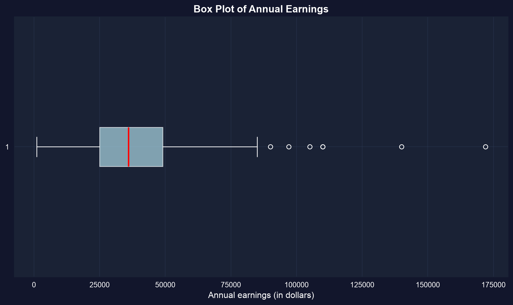
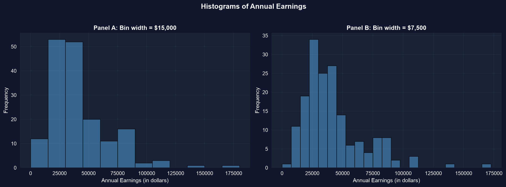
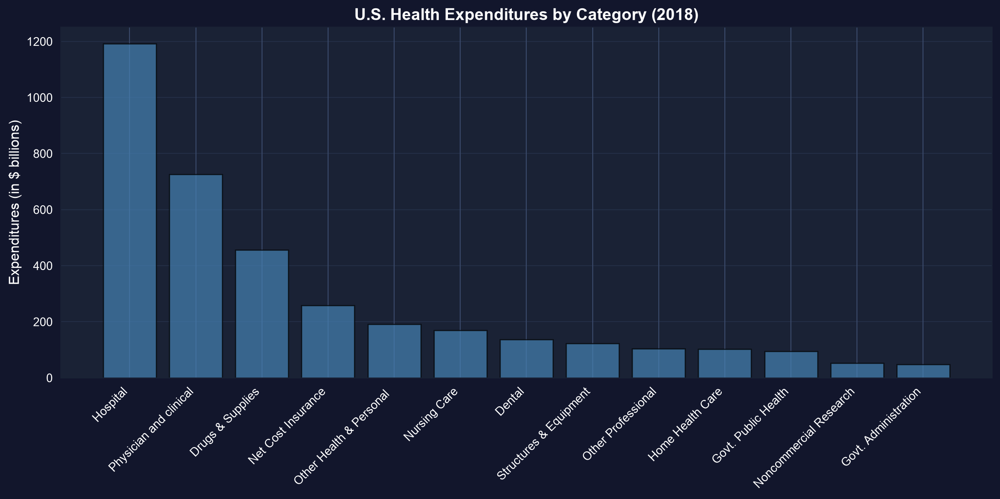
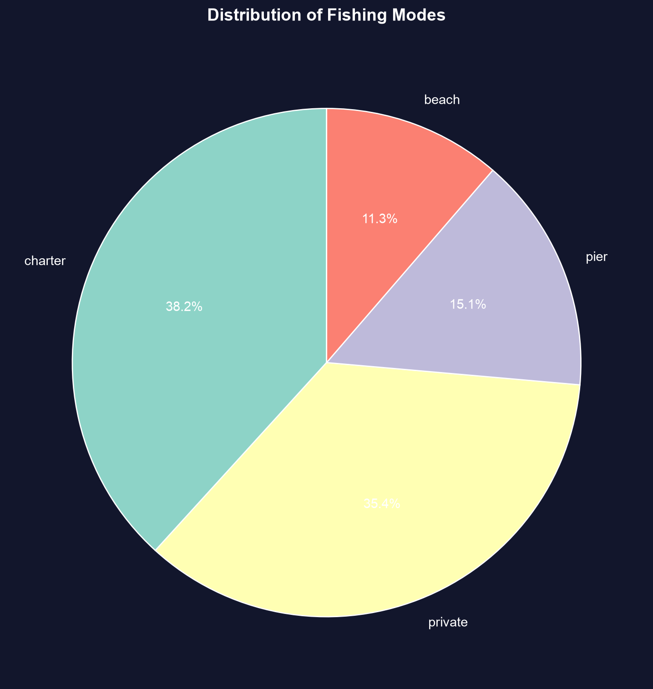
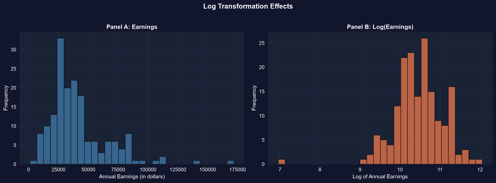
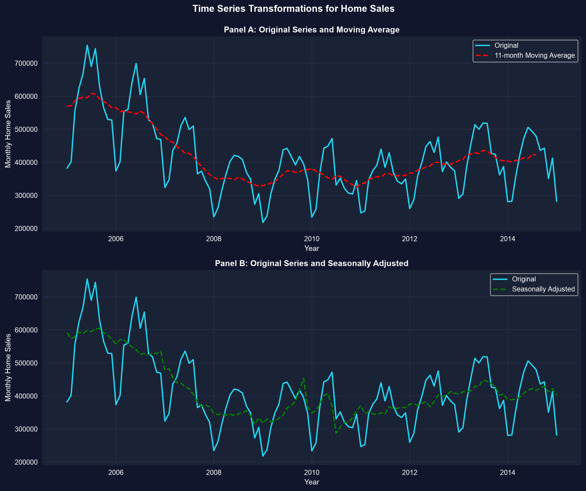

第I幕 · 一つの変数
30歳でフルタイムで働く女性171人の年間所得です。171個のドル金額が並んだ列を ひと目見ても、何もわかりません。
一変量の要約とは、その列をわずかな数値 — そしていくつかのグラフ — に圧縮し、 中心、散らばり、形を明らかにする方法です。
歪んだ経済データでは、中央値のほうが通常はより正直な「典型的」な値になります。
第II幕 · 調査
import pandas as pd # tabular data
from scipy import stats # skewness & kurtosis
# dataset: 171 full-time working women aged 30, 2010 (earnings in $)
url = "https://raw.githubusercontent.com/quarcs-lab/data-open/master/AED/AED_EARNINGS.DTA"
data = pd.read_stata(url) # read the Stata .dta into a DataFrame
data[["earnings"]].describe().round(0) # count, mean, std, min, quartiles, max
stats.skew(data["earnings"]), stats.kurtosis(data["earnings"]) # shape: 1.71, 4.32 (excess)高所得者がわずかに存在し（最大 $172,000）平均を押し上げます。「典型的」な値としては中央値を報告しましょう。

箱 = \(Q_1\) から \(Q_3\)（中央の50%）；赤線 = 中央値；右側の点 = 高所得者の外れ値。
中央値は中心より左にあり、右のひげが長い — このグラフこそが歪みそのものです。
import pandas as pd # tabular data
import matplotlib.pyplot as plt # plotting
url = "https://raw.githubusercontent.com/quarcs-lab/data-open/master/AED/AED_EARNINGS.DTA"
earnings = pd.read_stata(url)["earnings"] # the single variable
fig, ax = plt.subplots(1, 2, figsize=(12, 5)) # two panels side by side
ax[0].hist(earnings, bins=12, color="#22d3ee", edgecolor="black") # wider bins → coarse shape
ax[1].hist(earnings, bins=25, color="#22d3ee", edgecolor="black") # narrower bins → fine detail
plt.show() # render the histograms
同じ171個の所得を2つのビン幅で表示。どちらも長い右の裾を示すが、狭いビンは $25k–$45k 付近への集中を明らかにする。
必ず複数のビン幅を試しましょう — それぞれが異なる問いに答えます。

米国の医療支出、2018年：入院医療だけで $3,653B の約1/3 — 医師と薬を合わせたよりも多い。
プロットする前にカテゴリを並べ替え、順位がひと目で読めるようにしましょう。
import pandas as pd # tabular data
import matplotlib.pyplot as plt # plotting
url = "https://raw.githubusercontent.com/quarcs-lab/data-open/master/AED/AED_FISHING.DTA"
data = pd.read_stata(url) # 1,182 recreational fishers
counts = data["mode"].value_counts() # frequency of each fishing site
counts / counts.sum() * 100 # relative frequency (% of total)
plt.pie(counts, labels=counts.index, autopct="%1.1f%%") # each slice = a site's share
plt.show() # render the pie chart
チャーター（38.2%）+ プライベート（35.4%）= 74% の釣り人がボートを選ぶ；桟橋と浜辺が残りを分け合う。
円グラフは割合を示します。カテゴリが多い場合は、並べ替えた棒グラフのほうがより明快に比較できます。
import numpy as np # natural logarithm
import pandas as pd # tabular data
from scipy import stats # skewness
url = "https://raw.githubusercontent.com/quarcs-lab/data-open/master/AED/AED_EARNINGS.DTA"
data = pd.read_stata(url) # load the 171 earnings
data["ln_earnings"] = np.log(data["earnings"]) # log-transform the skewed variable
stats.skew(data["earnings"]) # 1.71 → strong right skew
stats.skew(data["ln_earnings"]) # -0.91 → nearly symmetric
パネルA：ドル建ての所得、強く右に歪んでいる。パネルB：log(所得)、ほぼ対称的 — 歪度は 1.71 から −0.91 へ下がる。
多くの検定は正規曲線の形を前提とします。対数変換は、歪んだ経済データをそこへ到達させる方法です。
import pandas as pd # tabular data
url = "https://raw.githubusercontent.com/quarcs-lab/data-open/master/AED/AED_MONTHLYHOMESALES.DTA"
data = pd.read_stata(url).query("year >= 2005") # monthly U.S. home sales, 2005+
data = data.sort_values("daten") # ensure time order
data["ma11"] = data["exsales"].rolling(11, center=True).mean() # 11-month moving average
data[["exsales", "ma11"]].describe().round(0) # raw (noisy) vs smoothed series
生の月次販売は季節とともにジグザグする；11か月移動平均（赤）と季節調整（緑）が、好況–不況–回復のサイクルを浮かび上がらせる。
移動平均は季節的なノイズを打ち消し、季節調整は予測可能なパターンそのものを取り除きます。
第III幕 · 解決
反論。「平均とヒストグラムを報告すればいい — 要約とはそういうものだ。」
応答。 適切な要約は形によって決まります。歪んだ所得では、 平均は「典型的」な値を過大評価するので、中央値とIQRを先頭に置きましょう。ヒストグラムの 語る物語はビン幅によって変わります。そして生の時系列は、平滑化するまでそのトレンドを隠します。
データに道具を合わせましょう：歪み → 中央値と対数；カテゴリ → 棒グラフ；時間 → 移動平均。